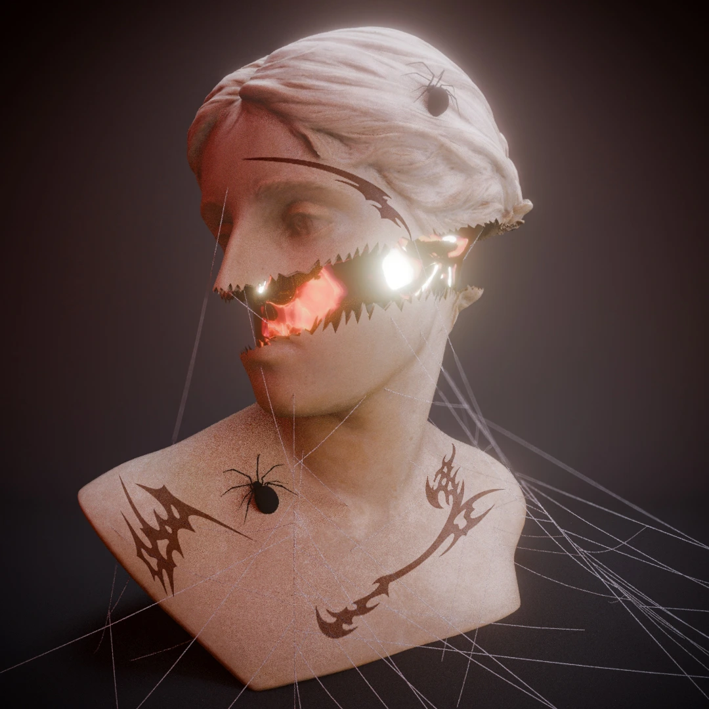
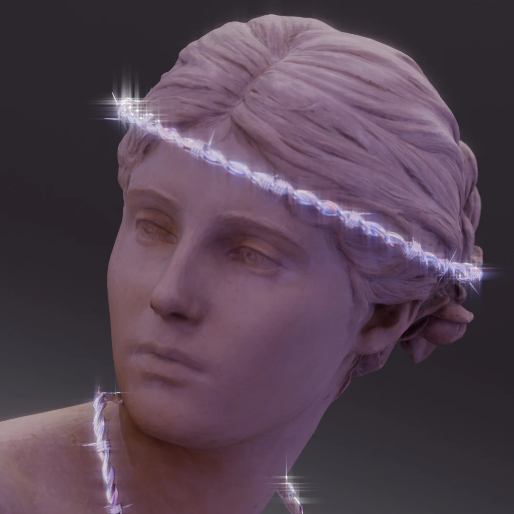
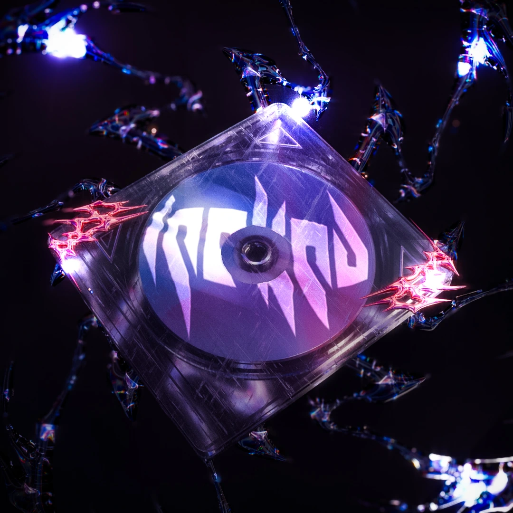
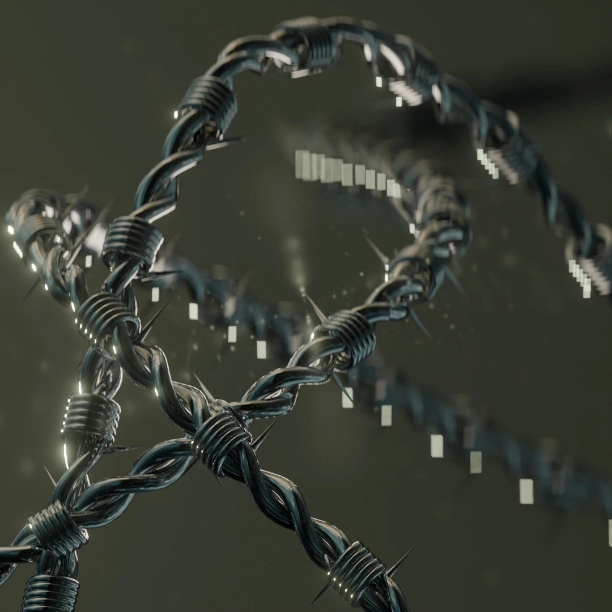
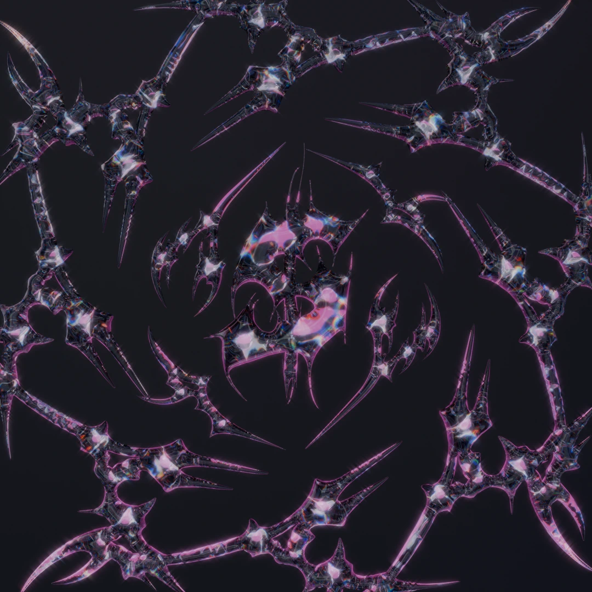

Blender 3D Gallery
3D Modeling & Digital Art
2023 - 2024
Creative Exploration
A collection of my 3D artwork created with Blender, showcasing diverse styles from surreal digital sculptures to atmospheric architectural renders. Each piece represents an exploration of form, texture, lighting, and storytelling through three-dimensional space.
These works demonstrate my proficiency in 3D modeling, material creation, lighting design, and cinematic composition using industry-standard tools and techniques.
Featured Artwork

Skullpture
Dark surreal sculpture exploring mortality and form through dramatic lighting and texture work.


Weeping Angel
Gothic-inspired angel statue with atmospheric lighting and weathered stone textures.


CD Render
Photorealistic compact disc showcasing advanced material work and reflection techniques.


Realism Study
Detailed study in photorealistic rendering with focus on accurate materials and lighting.

Barbed Wire
Industrial metal wire study focusing on procedural modeling and realistic rust materials.


Dimensional Typography
Stylized letter form exploring three-dimensional typography and creative material application.
Creative Process
Conceptualization
- Developed concepts through sketching and reference gathering to establish artistic direction.
- Explored various themes including gothic architecture, surrealism, industrial design, and photorealism.
- Focused on creating emotionally compelling compositions that tell a story through visual elements.
3D Modeling
- Utilized Blender's modeling tools including subdivision surface, sculpting, and procedural generation.
- Applied topology optimization for clean geometry and efficient rendering.
- Implemented non-destructive workflows using modifiers and procedural techniques.
- Created detailed base meshes and enhanced them through digital sculpting for organic forms.
Material & Texturing
- Developed physically-based materials using Blender's Shader Editor and Cycles renderer.
- Created procedural textures for seamless, scalable surface details.
- Applied weathering and aging effects using texture painting and node-based workflows.
- Achieved photorealistic surface properties through careful study of real-world material behavior.
Lighting & Composition
- Designed cinematic lighting setups using HDRI environments and custom light sources.
- Applied three-point lighting and atmospheric effects for dramatic mood enhancement.
- Utilized composition principles including rule of thirds, leading lines, and focal hierarchy.
- Implemented depth of field and camera angles to guide viewer attention.
Post-Processing
- Enhanced renders through color grading and contrast adjustment in Photoshop.
- Applied subtle film grain and vignetting for cinematic appeal.
- Optimized web delivery through format conversion and compression techniques.
Tools & Technologies
- Blender 3D
- Cycles Renderer
- Unity
- Substance Painter
- Adobe Photoshop
- HDRI Haven
- Quixel Megascans
- Node-based Materials
- Sculpting Tools
Skills Demonstrated
Technical Skills
- 3D Modeling & Sculpting
- Procedural Material Creation
- Lighting Design
- Rendering Optimization
- Post-Production
Artistic Skills
- Composition & Framing
- Color Theory
- Mood & Atmosphere
- Visual Storytelling
- Style Development